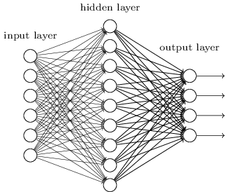
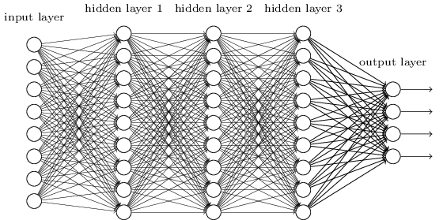

당신은 엔지니어이고 컴퓨터를 처음부터 설계해야한다고 가정하자.
어느 날 당신은 AND 게이트, OR 게이트와 같은 논리 회로를 설계하고 있는데 그때 상사가 나쁜 소식을 가지고 들어온다.
고객이 방금 설계에 대한 다음의 요구 사항을 추가했다:
전체 컴퓨터에 대한 회로는 단 두 개의 층으로 되어 있어야 한다.

당신은 너무 놀라서, "고객이 제정신이냐"고 상사에게 말할지도 모른다.
그러면 당신의 상사는 이렇게 말할 것이다: "나도 고객이 무리한 요구를 한다고 생각한다. 하지만 고객이 원하니, 우리는 들어줘야 한다."
사실 이러한 요구를 들어줄 수는 있다. 원하는 만큼 많은 개수의 입력을 AND 연산할 수 있는, 특별한 논리 게이트logical gate를 사용할 수 있다고 가정해보자. 그리고 많은 수의 입력을 NAND 연산할 수도 있다고 가정하자. 즉 다수의 입력을 AND한 후, 출력에 NOT 연산negate을 하는 게이트를 사용할 수 있다. 이러한 특수한 게이트를 이용하면 단 두개의 층으로 이루어진 회로를 이용해 어떠한 함수도 계산할 수 있다는 사실은 알려져 있다.
하지만 어떤 것이 가능하다는 것이 결코 좋은 아이디어라는 의미는 아니다. 실제로 회로 셀계 문제(혹은 어떤 알고리즘 문제)를 해결할 때, 어떻게 하위문제sub-problem를 풀 수 있는지부터 생각한다. 그런 다음에, 점진적으로 하위문제에 대한 결과를 통합한다. 즉 여러 계층으로 추상화해서 솔루션solution을 만든다.
예를 들어 두 수를 곱셈하는 논리 회로를 설계한다고 가정해보자.
두 수를 더하는 서브 회로sub-circuit를 이용해 회로를 설계할 수 있다.
두 수를 더하는 서브 회로는 두 개의 비트bit를 더하는 서브 회로의 서브 회로sub-sub-circuit을 이용해 설계할 수 있다.
대략적으로 나타내면 회로는 다음과 같다.

즉 최종 회로는 적어도 세 개의 층으로 구성된다.
사실, 하위 문제sub-task를 더 작게 나누어, 세개 이상의 층으로 회로를 구성할 수도 있지만 여기서 얻을 수 있는 일반적인 아이디어를 생각해보자.
결국 깊은 회로deep circuit는 설계 과정을 더 쉽게 만든다.
하지만 깊은 회로가 설계 과정에만 유용한 것은 아니다.
사실, 어떤 함수에 대해서는 매우 얕은 회로shallow circuit가 깊은 회로deep circuit보다 더 많은 회로 구성품을 필요로 한다.
예를 들어 1980년대 초에 소개된 논문*
역사가 꽤 복잡하므로 자세한 참고 자료를 제시하지는 않는다.
초기 역사와 참고자료에 대한 Johan Hastad의 2012년 논문
On the correlcation of parity and small-depth circuit
을 보자.
은
얕은 회로를 이용한다면, 비트 세트a set of bits의 패리티parity를 계산하는데 지수적으로exponentially 많은 게이트가 필요하다는 사실을 보여준다.
반면에 깊은 회로를 사용한다면, 작은 회로small circuit를 이용해 패리티를 쉽게 계산할 수 있다:
단지 비트 쌍의 패리티the parity of pairs of bits를 계산한다면, 이 결과를 이용해 비트 쌍에 대한 쌍의 패리티the parity of pairs of pairs of bits를 계산하여 전체 패리티를 빠르게 계산할 수 있다.
그러므로 깊은 회로는 본질적으로 얕은 회로보다 강력하다.
지금까지는 무리한 요구를 하는 이 고객처럼 뉴럴 네트워크에 접근했다.
우리가 보았던 거의 모든 네트워크는 단지 하나의 은닉층으로 구성되어 있다:

이 간단한 네트워크는 매우 유용하다:
이전의 장에서, 이러한 네트워크를 이용해 손글씨 숫자를 98% 이상의 정확도로 분류했다.
그리고 더 많은 은닉층으로 구성된 네트워크가 더 강력할 것이라는 것을 직관적으로 알 수 있다.

위와 같은 네트워크는 우리가 불 회로Boolean circuit에서 본 것처럼, 중간층intermediate layer을 이용해 다수의 추상화 계층을 구축할 수 있다.
예를 들어 우리가 시각적인 패턴 인식을 한다면, 첫 번째 층에 있는 뉴런은 선edge을 인식하고, 두 번째 층에 있는 뉴런은 인식한 선들을 이용해 삼각형이나 사각형 같은 더 복잡한 모양을 인식할 수 있을 것이다.
그런 다음 세 번째 층에서는 더욱 복잡한 모양을 인식한다.
이러한 다층의 추상화는 복잡한 패턴 인식 문제를 풀기 위한 학습에서의 강력한 이점을 제공한다.
게다가 회로에서 본 것과 비슷하게, 딥뉴럴 네트워크deep network가 얕은 네트워크shallow network보다 본질적으로 강력하다는 이론적인 결과가 있다.*
이는 어떤 문제와 네트워크 구조에 대해
Razvan Pascanu, Guido Montufar, Yoshua Bengio (2014)에 의해
On the number of response regions of deep feed forward networks
with piece-wise linear activations에서 증명되었다.
또는 Yoshua Bengio (2009)의 Learning deep architectures for AI
의 section 2를 보자.
이러한 딥 네트워크deep networks를 어떻게 학습시킬 수 있을까? 이번 장에서는, 역전파backpropagation에 의한 확률적 경사 하강법stochastic gradient descent을 이용해 딥뉴럴 네트워크를 학습시켜 볼 것이다. 하지만 우리는 딥뉴럴 네트워크가 얕은 네트워크보다 좋은 성능을 내지 못하는 문제를 마주할 것이다.
위에서 논의한 내용을 비추어 볼 때 이 실패는 놀라워 보인다. 딥 네트워크를 포기하는 대신에 딥 네트워크를 학습시키는 방법을 이해하고, 파고들어 볼 것이다. 자세히 살펴보면, 딥 네트워크의 서로 다른 층에서 학습을 진행하는 속도가 매우 다르다는 사실을 발견할 것이다. 특히 네트워크에서 뒤에 있는 층이 학습을 잘할 때, 앞에 있는 층에서 학습을 거의 하지 않고 문제에 빠지는 경우가 종종 발생한다. 이러한 문제는 단지 운이 나빠서 나오는 결과가 아니다. 그래디언트gradient 기반의 학습 알고리즘 기술과 연관되어 있는, 학습 속도 저하learning slowdown문제에 대한 근본적인 이유를 살펴볼 것이다.
문제를 심도있게 살펴볼수록, 정반대의 현상이 일어나는 것을 볼 수 있다: 앞에 있는 층에서는 학습을 잘 하지만 뒤에 있는 층에서 학습을 못하는 현상이 나타난다. 사실 다수의 층으로 이루어진, 깊은 뉴럴 네트워크에서 경사 하강법을 이용해 학습을 하면 본질적으로 불안정하다는 사실에 대해 알아볼 것이다. 이 불안정함은 학습을 진행하는 동안 앞의 층, 혹은 뒤에 있는 층에서 학습을 못하는 결과를 초래한다.
이 모든 것이 나쁜 소식처럼 들리지만, 이러한 어려운 점들을 살펴보면서 딥 네트워크를 효과적으로 학습시키기 위해 필요한 것에 대한 통찰력을 얻을 수 있다. 그리고 이러한 과정을 통해, 딥러닝을 이용한 이미지 인식 문제 해결방법에 대해 다음 장에서 살펴볼 것이다.
그렇다면, 딥 네트워크를 학습시킬 때 무엇이 잘못된 걸까?
이 질문에 답하기 위해, 먼저 단 하나의 은닉층으로 구성된 네트워크에 대해 살펴보자. 늘 그렇듯, MNIST 숫자 분류 문제를 이용해 학습에 대한 실험을 해볼 것이다.* 앞에서 MNIST 문제를 도입했다.
원한다면, 컴퓨터에서 직접 네트워크를 학습시킬 수 있다. 물론, 그냥 읽기만 해도 상관없다. 대신 직접 해보고 싶다면, 파이썬 2.7, Numpy, 코드 복사본이 필요하며, 다음 명령어를 입력하여 저장소를 클로닝cloning해 얻을 수 있다.
git clone https://github.com/mnielsen/neural-networks-and-deep-learning.git
git을 사용하지 않는다면, 여기서 데이터와 코드를 다운로드할 수 있다.
src 하위디렉토리subdirectory로 바꿔야할 필요는 있다.
그런 다음, 파이썬 쉘에서 MNIST 데이터를 로드한다:
>>> import mnist_loader
>>> training_data, validation_data, test_data = \
... mnist_loader.load_data_wrapper()그 다음, 네트워크를 구성한다:
>>> import network2
>>> net = network2.Network([784, 30, 10])이 네트워크는 입력층에 784개의 뉴런이 있으며, 이는 상응하는 $28 \times 28 = 784$개의 입력 이미지 픽셀이다. 그리고 30개의 은닉 뉴런과, MNIST 숫자 ('0', '1', '2', $\ldots$, '9')에 대한 가능한 10개의 분류에 대응하는 출력 뉴런 10개를 사용한다.
미니 배치는 10, 학습률 $\eta = 0.1$, 정규화 파라미터regularization parameter $\lambda = 5.0$으로 하여, 30 에폭epoch동안 네트워크를 학습시켜보자.
학습을 시키면서, validation_data*
컴퓨터의 속도에 따라, 네트워크를 학습시키는 데
몇 분이 걸릴수도 있다.
그러므로 코드가 다 실행될 때까지 기다리지말고,
책을 계속 읽어도 된다.
에 대한 분류 정확도를 모니터할 것이다.
>>> net.SGD(training_data, 30, 10, 0.1, lmbda=5.0,
... evaluation_data=validation_data, monitor_evaluation_accuracy=True)96.48%의 분류 정확도가 나온다.(이는 실행할 때마다 약간씩 달라질 수 있다) 비슷한 구성으로 한 이전의 결과와 비교해보자.
이제, 마찬가지로 30개의 뉴런을 가지는 은닉층을 더 추가해보자. 그리고 같은 하이퍼파라미터로 학습을 시켜보자:
>>> net = network2.Network([784, 30, 30, 10])
>>> net.SGD(training_data, 30, 10, 0.1, lmbda=5.0,
... evaluation_data=validation_data, monitor_evaluation_accuracy=True)이는 96.90%로 향상된 분류 정확도를 낸다. 이는 조금 더 깊은 네트워크가 도움이 된다는 좋은 결과이다. 다시 한번 30개의 뉴런으로 구성된 은닉층을 추가해보자.
>>> net = network2.Network([784, 30, 30, 30, 10])
>>> net.SGD(training_data, 30, 10, 0.1, lmbda=5.0,
... evaluation_data=validation_data, monitor_evaluation_accuracy=True)이번에는 전혀 도움이 되지 않는다. 오히려 결과는 96.57%로 떨어지며, 이는 원래의 얕은 네트워크와 비슷한 결과이다. 그리고 하나의 은닉층을 더 추가한다고 가정해보자.
>>> net = network2.Network([784, 30, 30, 30, 30, 10])
>>> net.SGD(training_data, 30, 10, 0.1, lmbda=5.0,
... evaluation_data=validation_data, monitor_evaluation_accuracy=True)분류 정확도는 다시 떨어져, 96.53%가 된다. 엄청나게 많이 떨어진 것은 아니지만, 그렇다고 좋은 결과도 아니다.
Deep Learning, book by Ian Goodfellow, Yoshua Bengio, and Aaron Courville
한글 글꼴(korean fonts): 나눔 글꼴
In academic work,
please cite this book as: Michael A. Nielsen, "Neural Networks and
Deep Learning", Determination Press, 2015
This work is licensed under a
Creative Commons Attribution-NonCommercial 3.0 Unported License
. This means you're free to copy, share, and
build on this book, but not to sell it. If you're interested in
commercial use, please contact me(Michael A. Nielsen).
Last update: Tue Jun 11 16:58:53 2019
학업적으로 이용 시 다음과 같이 인용해 주세요: Michael A. Nielsen, "Neural Networks and
Deep Learning", Determination Press, 2015

이 저작물은
크리에이티브 커먼즈 저작자표시-비영리 3.0 Unported 라이선스
에 따라 이용할 수 있습니다.
상업적 이용을 원하면, 저자(Michael A. Nielsen)에게 연락을 주세요.
마지막 깁고 더함: 19/06/21